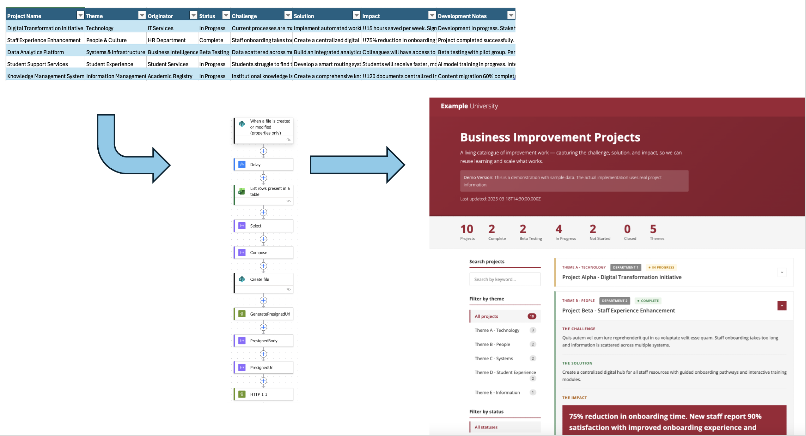

Business Improvement Projects Dashboard
A living catalogue of improvement work capturing the challenge, solution, and impact for business improvement projects across a large higher education institution. The system demonstrates end-to-end automation, combining SharePoint Excel data management, Power Automate workflows, AWS S3 hosting, and modern web development to create a transparent, searchable project portfolio.
The Automated Workflow

The dashboard operates through a fully automated pipeline: project teams update an Excel spreadsheet stored in SharePoint, Power Automate workflows automatically transform and publish the data to AWS S3 as JSON, and the web application dynamically renders the latest project information. This eliminates manual data export/import processes and ensures the dashboard always reflects current project status.
Impact & Reach
Projects Documented
Categories
Automated Publishing
Teams Involved
The Vision: Create a single, authoritative source for business improvement work that enables transparency, supports governance, and allows reuse of learning across teams. No more scattered documentation or lost knowledge when staff move on.
The Strategic Problem
Business improvement projects across the university faced several interconnected challenges. Project information was fragmented across emails, SharePoint sites, Teams channels, and Word documents, making it difficult to get an overview of ongoing work. Senior leadership and stakeholders couldn't easily see what projects were in progress, their status, or their impact. When staff members moved to different roles, project context and learning often disappeared with them, and without a standard approach, documentation quality varied significantly. Publishing project updates required manual copying, formatting, and uploading, leading to outdated information and making it difficult to demonstrate value, support decision-making, or report on portfolio health.
The Solution: Automated Project Portfolio
I designed and developed an end-to-end system that addresses these challenges through automation and standardisation:
Architecture Overview
Data Source
SharePoint list serves as the single authoritative source. Project owners update information directly using familiar tools with validation and structure.
Automation Layer
Power Automate flow triggers on SharePoint changes, transforms data to JSON, and publishes to AWS S3 via pre-signed URLs—no manual steps required.
Web Interface
Static website hosted on S3 with real-time search, multiple filters (category, status, team), expandable project cards, and responsive design.
Rich Content
Supports markdown links and images, smart impact highlighting for measurable results, and color-coded categories and teams for quick visual scanning.
Technical Highlights
The project required solving several technical challenges to create a robust, automated system. Security was paramount—a Python-based pre-signed URL solution was implemented to enable Power Automate to upload files to AWS S3 without exposing credentials. Power Automate flows needed defensive programming techniques to prevent silent failures and recursive triggering. The client-side interface was optimized for performance with efficient filtering, lazy loading for images, and CSS-based animations. To enable rich content without requiring HTML knowledge, secure markdown parsing was implemented that converts simple syntax into formatted links and images while preventing XSS vulnerabilities.
Technology Stack
Key Features
The dashboard provides multi-dimensional filtering that allows users to filter projects by category (functional area or strategic theme), status (Not Started, In Progress, Beta Testing, Complete), and team (which departments initiated each project). All filters work together simultaneously for precise navigation. A real-time search function searches across all project fields—name, challenge, solution, impact, and development notes—updating results as you type with instant feedback and a result count display.
Smart impact highlighting automatically detects and emphasizes measurable impacts like time savings, percentages, and quantifiable metrics in colored boxes, with a manual override option using the !! prefix. Multi-line impacts are displayed as clean paragraph text or lists. Color-coded organization uses distinct colors for each category and team, with consistent status indicators throughout the interface and accessibility-friendly contrast ratios.
The system supports rich content through markdown syntax—[Link text](url) for clickable links and  for embedded images—with a click-to-zoom lightbox and automatic escaping to prevent XSS attacks. The entire interface is fully responsive across desktop, tablet, and mobile devices, with semantic HTML structure for screen readers, keyboard navigation support, and clean professional branding.
Development Journey
Development began by consulting with stakeholders to define what information should be captured, creating a simple structured data model (Challenge, Solution, Impact, Development Notes), and establishing SharePoint as the single authoritative source. A Power Automate flow was then built to export SharePoint data to JSON, a Python script was developed for secure S3 pre-signed URL generation, and the flow was integrated with AWS to automatically publish on every SharePoint update, with flow stability issues debugged using intermediate Compose steps.
The web interface phase involved creating a static website with expandable project cards, implementing filtering and search functionality, adding markdown parsing for links and images, and designing smart impact highlighting with flexible pattern matching. After initial deployment, the system was refined based on stakeholder feedback by adding team filtering, implementing color coding for visual organization, creating an image lightbox for better content viewing, fixing search security and performance issues, and establishing version control with Git and deployment to a private GitHub repository.
Impact & Benefits
Multiple projects documented in a single, searchable location
Improved visibility and transparency across the project portfolio. Colleagues can quickly understand what projects are underway, their purpose, and current status, supporting clearer communication, better governance, and reuse of learning across teams.
Project managers can update project information directly in SharePoint without technical skills, with changes appearing on the live site within seconds automatically and rich formatting options available through simple syntax. Senior leadership gains an at-a-glance portfolio view showing all ongoing work, can filter by status to see what's complete or in progress, and has an evidence base for reporting and decision-making.
Stakeholders can search for projects relevant to their area or category, understand the challenges being addressed and solutions being developed, and see measurable impacts and success stories. Future teams benefit from preserved knowledge when staff move roles, with learning that can be reused and built upon, and patterns and approaches that become visible and shareable across the organization.
Lessons Learned
Agreeing on the data model structure first made everything else easier—simple, clear fields beat complex taxonomies every time. Power Automate flows need defensive programming with intermediate steps, explicit waits, and logic to prevent self-triggering, while pre-signed URLs solved the credential exposure problem elegantly without complex infrastructure. The best automation is invisible to users; staff just update SharePoint and the system handles the rest. Starting simple with static data then iteratively adding features like search, images, and color coding based on usage and feedback proved more effective than trying to build everything upfront. Enabling rich content through simple markdown syntax gave non-technical users powerful formatting capabilities without requiring HTML knowledge.
Future Development
This project is work in progress with several enhancements planned, including analytics integration to track which projects are most viewed, export functionality for PDF reports and data downloads, project timeline visualization showing progression over time, advanced search with boolean operators and saved searches, integration with other university systems for automatic status updates, and eventual migration to a public GitHub repository once development stabilizes.
Technical Philosophy: This project embodies my approach of Learning & Teaching + Coding + Strategy = Real-World Impact. It combines pedagogical understanding (how people learn and share knowledge), practical technical solutions (automation, web development), and strategic thinking (governance, transparency, evidence) to solve real institutional challenges.